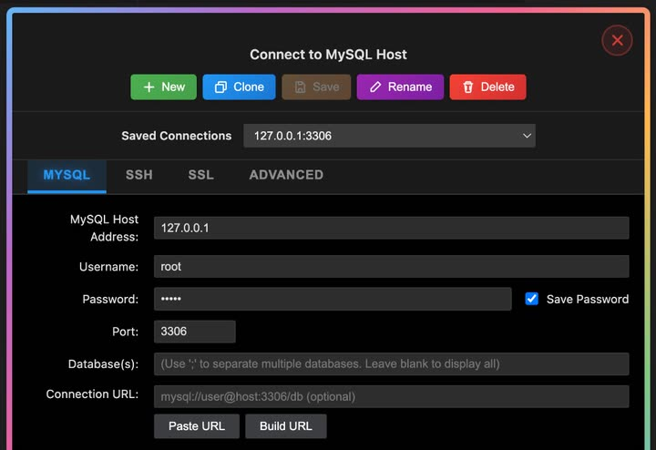
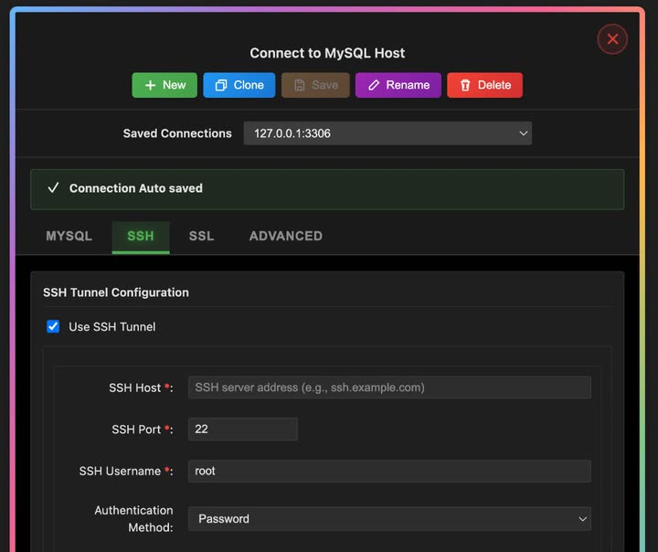

Connect a database
Add a MySQL or MariaDB connection when you’re ready to run SQL from the editor—basics, advanced options, SSL, and SSH tunnels.
Open the connection dialog
Open the SQLLens.AI sidebar and choose + Add connection (or edit an existing entry). The Connect to MySQL Host window opens with four tabs: MySQL, SSH, SSL, and Advanced.
Saved connections & toolbar
Use the top of the dialog to pick or manage profiles before you connect.
| Control | What it does |
|---|---|
| Saved Connections | Dropdown of saved profiles (for example 127.0.0.1:3306). Select one to load its settings. Unsaved work may appear as an italic entry until you save. |
| New | Start a blank profile; you are prompted for a connection name. |
| Clone | Copy the current saved profile under a new name (available when editing a saved connection). |
| Save | Write changes to the profile (enabled when the form has unsaved edits and a name is set). |
| Rename | Change the display name of the saved profile. |
| Delete | Remove the saved profile after confirmation. |
After a successful save you may see Connection Auto saved. Status banners above the tabs report test or connect failures and successes.
MySQL tab
Core server login and optional URL helpers. Required fields are marked in the UI.
| Field | What it is | Typical value |
|---|---|---|
| MySQL Host Address | Hostname or IP of the MySQL/MariaDB server | 127.0.0.1 |
| Username | Database user | root |
| Password | Account password | — |
| Save Password | When checked, stores the password in VS Code Secret Storage (not in settings.json) | On |
| Port | TCP port | 3306 |
| Database(s) | Optional default schema(s). Use ; to list several; leave blank to show all databases you can access | app or empty |
| Connection URL | Optional mysql:// URL; can be parsed into the fields above | mysql://user@host:3306/db |
| Paste URL / Build URL | Paste a URL from the clipboard into the form, or build a URL from the current host, port, user, password, and database fields | — |
| Use Compressed Protocol | Enables compressed client protocol when the server supports it | Off unless needed |
| Session Idle Timeout | Default uses server settings, or Custom with a value in seconds | Default |
| Keep-Alive Interval | How often (seconds) the client sends keep-alive traffic on idle connections | 28800 |

SSH tab
Use this when MySQL is only reachable through a bastion or jump host. Enable Use SSH Tunnel, then complete the SSH fields below.
| Field | What it is | Typical value |
|---|---|---|
| Use SSH Tunnel | Turns SSH port forwarding on for this profile | Off unless required |
| SSH Host | Bastion hostname or IP (required when tunnel is on) | bastion.example.com |
| SSH Port | SSH daemon port | 22 |
| SSH Username | SSH login user | root |
| Authentication Method | Password or Private Key | Password |
| SSH Password | Shown when method is Password (required) | — |
| Private Key Path | Path to key file when method is Private Key; use Browse… to pick a file | ~/.ssh/id_rsa |
| Passphrase | Optional unlock phrase for an encrypted private key | — |
SQLLens.AI opens a local forward through SSH, then connects the MySQL client to the database host and port from the MySQL tab.

SSL tab
Enable Use SSL/TLS when the server requires encrypted connections. Optional certificate paths map to standard MySQL SSL file options.
| Field | What it is |
|---|---|
| Use SSL/TLS | Turns TLS on for this profile |
| CA Certificate | Path to the certificate authority file (.pem) |
| Client Certificate | Path to the client certificate file |
| Client Key | Path to the client private key file |
Use CA and client cert/key paths that match your server’s TLS policy. For internal labs only, your administrator may allow simpler trust settings on the server side—do not relax TLS requirements on production systems without approval.
Advanced tab
Fine-tune timeouts, locale, and which databases appear in the explorer tree.
| Field | What it is | Typical value |
|---|---|---|
| Connection Timeout | Seconds to wait while opening the TCP/MySQL session | 30 |
| Request Timeout | Seconds to wait for an individual request to finish | 30 |
| Timezone | Session timezone offset sent to the server | +00:00 |
| Character Encoding | Client character set (UTF-8, UTF-8 MB4, Latin1, ASCII) | UTF-8 |
| Show Hidden Databases | When checked, includes system/hidden schemas in the tree if the server exposes them | Off |
| Include Databases | Comma-separated allow list; only these databases appear in the explorer (empty = no filter) | empty |
Connect, test, or cancel
At the bottom of the dialog:
- Connect — saves (when needed) and opens the connection in the explorer.
- Test Connection — validates settings without leaving the dialog.
- Cancel — closes the form without connecting.
- Need Help? — opens in-product help for connection troubleshooting.